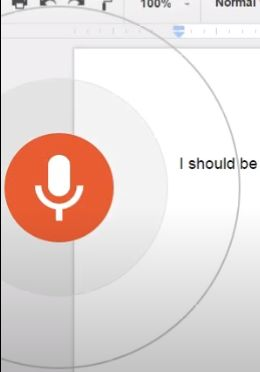

Please Note: this page in DRAFT, content to be revised
Testing Automated Transcription Services
Automated Transcription Services
Page content best viewed at a browser width of 980px or higher
Automated Transcription Services are online systems that offer the capability to process either a live stream of audio, such as from a microphone, or from recorded audio within a digital file, and then output text from speech by using speech-recognition in combination with other technologies, possibly including aspects of 'Machine Learning' and Artificial Intelligence'.
Features
Some common featured offered by automated services are
- Automatic speech recognition - may be enabled by Deep Neural Network
- multiple vocabularies - data sets to enable recognition and processing of differnt languages, and potentially dialects
- Automatic punctuation - the automatic addition of punctuation to text output
- Speaker recognition
- Multi-channel recognition
In order to achieve optimal results from these services the audio source will contain clear voices without strong accents, and with little or no background noise. Where the audio source is unclear, there are high levels of noise, or speakers have strong accents then a manual transcription service would be the correct alternative.
Testing Plan
Some limited testing was performed in order to evaluate the performance of certain text to speech services in terms of accuracy of output, and service or plan feature set.
At the time of review, of those services considered within this research period, trial options tended to be quite limited: in the extent of testing tine time allowed and features included, or in the option to upload files - and where possible, then generally a set limit in the number and duration files to be processed.
For those services that either did not allow video upload but did allow audio file formats As essentially we are just testing the handling of sound - use audio only content to limit file size of test files.
Use public domain sources of speech.
Librivox audio-book readings is one good option for isolated, single as they are recorded largely by amateur readers with domestic equipment, rather than to professional standards in studio conditions, which would not generally be representative of video collections.
"Public Domain Mark 1.0 No Copyright
This work has been identified as being free of known
restrictions under copyright law, including all related and neighbouring rights. You can copy, modify, distribute and perform the work, even for commercial purposes, all without asking permission. See Other Information below..."
Test Files
Test file 1:
Librivox recording (public domain) of short story Louise by Saki.
- 1 reader.
- Audio recording quality: Fair
- Bitrate: 128Kbps, 64 Kbps
- Vocalisation clear (‘home-counties’, ‘old BBC’) English accent.
- Rate of speech moderate to slow
Test file 2:
As Test file 1 above, except at a bitrate of 64Kbps
Estimating Percentage of Error:
- Get number of errors:
- Count number of errors from output text (with any timecode or other ‘non-written-text’ elements removed) compared with the manually transcribed version (with quotation marks removed). Make note of any paragraph variations that might skew comparison results
- Divide number of errors by total of words
- Multiply by 100 to give the error percentage
- Does punctuation in the source throw off comparison checks?
How to Automatically Transcribe Video files into Text Using YouTube
https://www.youtube.com/watch?v=mIuVURa4ivI
Video must be uploaded to YouTube for generation of ‘Closed Captions’ to take As of 2016 video, states that automatic transcriptions can take from a minute to a day.
No punctuation, you can edit the transcriptions on YouTube after generation. No text output, tough apparently there is a get around.
How to Transcribe Audio to Text (Video Transcription Tutorial!) https://www.youtube.com/watch?v=bltDLL6-CbQ
Google Voice
These services require upload or sending through of link to video to be processed, OR upload audio only - mp3 etc.
Online Services Temi - around 10c per minute Spext - around 25c per minute
Automated processes, fast turnaround, - require very clear audio. Results may be variable, particularly where background noise/ music present or speaker has a strong accent. Not recommended by video host where high level of accuracy is important (though 2nd, manual clean up run could be made to fix errors)
Overview of Otter.AI
https://otter.ai/
Currently running a month’s trial at Premium. After that return to Free rate at: 600mins per month, longest duration file: 40mins.
images/Premium Features (@ $8.33 per month):
Otter.ai Features
- Upload of audio and video files. Otter lets you import existing recordings in the following formats:
- audio: mp3, aac, wav, m4a, wma
- video: mp4, avi, mov, wmv, mpg
- advanced export: PDF, DOCX, SRT
- Custom vocabulary
- Synch audio and video from Dropbox
- Bulk import and export is available
Format export options from Ottter.AI

Test of UKSC file: cr1-09-12-16-judgements_imx30_1.mp4, as downloaded from:
https://discovery.nationalarchives.gov.uk/details/r/f965fcd22e564027b331f6934773f1da
Otter.AI
Otter.AI ‘MyConversations’/ Edit page

The Otter.ai service produces the following outputs:
- Audio playback of transcript - the text highlights individual word by word and in synch with the spoken word implying that the underlying timecode must be applied to each word and quite accurate. YouTube by contrast tends to be ‘short phrase’ based – presumably the time-code is per a set period of time rather.
- Text output to screen https://otter.ai/note/22YSYXFVYCP6Q34K?f=%2Fmy-notes
- Summary Keywords derived from the text transcription e.g. “school”, “admission”, “grounds” etc.
- Time-coded text – in this case one block of text per speaker (total of 2), not line-by-line time-code details as seen in YouTube CC export files
Otter.ai export text options
OtterAI output from Audio file (Louise by Saki)
Speech Source: Librivox, public domain: Saki Toys of Peace/ ‘Louise’ toysofpeace_02_saki_64kb from Internet Archive.
Text below also sourced from IA, corrections from OCR made for correct comparison with output from service.
Story number two of The Toys of Peace. This is a Librivox recording. All Librivox recordings are in the public domain. For more information or to volunteer please visit Librivox.org.
Recording by Graham Redman.
The Toys of Peace. Short stories by Saki.
LOUISE
“The tea will be quite cold, you'd better ring for some more," said the Dowager Lady Beanford.
Susan Lady Beanford was a vigorous old woman who had coquetted with imaginary ill-health for the greater part of a lifetime; Clovis Sangrail irreverently declared that she had caught a chill at the Coronation of Queen Victoria and had never let it go again. Her sister, Jane Thropplestance, who was some years her junior, was chiefly remarkable for being the most absent-minded woman in Middlesex.
"I've really been unusually clever this afternoon," she remarked gaily, as she rang for the tea. "I've called on all the people I meant to call on, and I've done all the shopping that I set out to do. I even remembered to try and match that silk for you at Harrod's, but I'd forgotten to bring the pattern with me, so it was no use. I really think that was the only important thing I forgot during the whole afternoon. Quite wonderful for me, isn't it?"
"What have you done with Louise?" asked her sister. "Didn't you take her out with you? You said you were going to."
"Good gracious," exclaimed Jane, "what have I done with Louise? I must have left her somewhere."
"But where?"
"That's just it. Where have I left her? I can't remember if the Carrywoods were at home or if I just left cards. If they were at home I may have left Louise there to play bridge. I'll go and telephone to Lord Carrywood and find out."
"Is that you, Lord Carrywood?" she queried over the telephone; "it's me, Jane Thropplestance. I want to know, have you seen Louise?"
"'Louise,'" came the answer, "it's been my fate to see it three times. At first, I must admit, I wasn't impressed by it, but the music grows on one after a bit. Still, I don't think I want to see it again just at present. Were you going to offer me a seat in your box?"
"Not the opera 'Louise' -my niece, Louise Thropplestance. I thought I might have left her at your house."
“You left cards on us this afternoon, I understand, but I don't think you left a niece. The footman would have been sure to have mentioned it if you had. Is it going to be a fashion to leave nieces on people as well as cards? I hope not; some of these houses in Berkeley-square have practically no accommodation for that sort of thing."
"She's not at the Carrywoods'," announced Jane, returning to her tea; "now I come to think of it, perhaps I left her at the silk counter at Selfridge's. I may have told her to wait there a moment while I went to look at the silks in a better light, and I may easily have forgotten about her when I found I hadn't your pattern with me. In that case she's still sitting there. She wouldn't move unless she was told to; Louise has no initiative."
"You said you tried to match the silk at Harrod's," interjected the dowager.
"Did I? Perhaps it was Harrod's. I really don't remember. It was one of those places where every one is so kind and sympathetic and devoted that one almost hates to take even a reel of cotton away from such pleasant surroundings."
"I think you might have taken Louise away. I don't like the idea of her being there among a lot of strangers. Supposing some unprincipled person was to get into conversation with her."
"Impossible. Louise has no conversation. I've never discovered a single topic on which she'd anything to say beyond 'Do you think so? I dare say you're right.' I really thought her reticence about the fall of the Ribot Ministry was ridiculous, considering how much her dear mother used to visit Paris. This bread and butter is cut far too thin; it crumbles away long before you can get it to your mouth. One feels so absurd, snapping at one's food in mid-air, like a trout leaping at may-fly."
"I am rather surprised," said the dowager, "that you can sit there making a hearty tea when you've just lost a favourite niece."
"You talk as if I'd lost her in a churchyard sense, instead of having temporarily mislaid her. I'm sure to remember presently where I left her."
"You didn't visit any place of devotion, did you? If you've left her mooning about Westminster Abbey or St. Peter's, Eaton Square, without being able to give any satisfactory reason why she's there, she'll be seized under the Cat and Mouse Act and sent to Reginald McKenna."
"That would be extremely awkward," said Jane, meeting an irresolute piece of bread and butter halfway; "we hardly know the McKennas, and it would be very tiresome having to telephone to some unsympathetic private secretary, describing Louise to him and asking to have her sent back in time for dinner. Fortunately, I didn't go to any place of devotion, though I did get mixed up with a Salvation Army procession. It was quite interesting to be at close quarters with them, they're so absolutely different to what they used to be when I first remember them in the 'eighties. They used to go about then unkempt and dishevelled, in a sort of smiling rage with the world, and now they're spruce and jaunty and flamboyantly decorative, like a geranium bed with religious convictions. Laura Kettleway was going on about them in the lift of the Dover Street Tube the other day, saying what a lot of good work they did, and what a loss it would have been if they'd never existed. ‘If they had never existed,' I said, 'Granville Barker would have been certain to have invented something that looked exactly like them.' If you say things like that, quite loud, in a Tube lift, they always sound like epigrams."
"I think you ought to do something about Louise," said the dowager.
"I'm trying to think whether she was with me when I called on Ada Spelvexit. I rather enjoyed myself there. Ada was trying, as usual, to ram that odious Koriatoffski woman down my throat, knowing perfectly well that I detest her, and in an unguarded moment she said: 'She's leaving her present house and going to Lower Seymour Street.' 'I dare say she will, if she stays there long enough,’ I said. Ada didn't see it for about three minutes, and then she was positively uncivil. No, I am certain I didn't leave Louise there."
"If you could manage to remember where you did leave her, it would be more to the point than these negative assurances," said Lady Beanford; "so far, all that we know is that she is not at the Carrywoods', or Ada Spelvexit's, or Westminster Abbey."
"That narrows the search down a bit," said Jane hopefully; "I rather fancy she must have been with me when I went to Mornay's. I know I went to Mornay's, because I remember meeting that delightful Malcolm What's-his-name there -you know whom I mean. That's the great advantage of people having unusual first names, you needn't try and remember what their other name is. Of course I know one or two other Malcolms, but none that could possibly be described as delightful. He gave me two tickets for the Happy Sunday Evenings in Sloane Square. I've probably left them at Mornay's, but still it was awfully kind of him to give them to me."
"Do you think you left Louise there?"
"I might telephone and ask. Oh, Robert, before you clear the tea-things away I wish you'd ring up Mornay's, in Regent Street, and ask if I left two theatre tickets and one niece in their shop this afternoon."
“A niece, ma'am?" asked the footman.
“Yes, Miss Louise didn't come home with me, and I'm not sure where I left her."
"Miss Louise has been upstairs all the afternoon, ma'am, reading to the second kitchenmaid, who has the neuralgia. I took up tea to Miss Louise at a quarter to five o'clock, ma'am."
"Of course, how silly of me. I remember now, I asked her to read the Faerie Queene to poor Emma, to try to send her to sleep. I always get some one to read the Faerie Queene to me when I have neuralgia, and it usually sends me to sleep. Louise doesn't seem to have been successful, but one can't say she hasn't tried. I expect after the first hour or so the kitchenmaid would rather have been left alone with her neuralgia, but of course Louise wouldn't leave off till some one told her to. Anyhow, you can ring up Mornay's, Robert, and ask whether I left two theatre tickets there. Except for your silk, Susan, those seem to be the only things I've forgotten this afternoon. Quite wonderful for me.”
End of Louise, recorded by Graham Redman.
WORD COUNT: 1,532
Output from Otter.ai
Story number two of the toys of peace. This is a Librivox recording. All Librivox recordings are in the public domain. For more information or to volunteer, please visit librivox.org
Recording by Graham Redmond
the toys of peace short stories by Saki
Louise
the T will be quite cold. You're better ring for some more, said the damage lady been fed. Susan lady been fed was a vigorous old woman who had co created with imaginary ill health for the greater part of a lifetime. clovers sang Rael irreverently declared that she had caught a chill at the coronation of Queen Victoria and had never let it go again. Her sister James Rob Austin's who was Some years have Jr. was chiefly remarkable for being the most absent minded woman in Middlesex. (5)
I've really
been unusually clever this afternoon, she remarked gaily as she rang for the tea. I've called on all the people I meant to call on, and I've done all the shopping that I set out to do. I even remember to try and match that silk for you and Harrods. But I'd forgotten to bring the pattern with me. So it was no use. I really think that was the only important thing I forgot during the whole afternoon. quite wonderful for me, isn't it? What have you done with Louise? asked her sister. Didn't you take her out with you? You said you were going to Good gracious. Explain, Jane. What have I done with Louise? I must have left her somewhere. But where? That's justed . (4)
Where have I left her
(I) Can't remember if the carry Woods were at home or if I just left cards. If they were at home, I may have left Louise there to play bridge. I'll go and tell him to Lord Carrie wouldn't find out. Is that you Lord Carrie would? She queried over the telephone? It's me, James rubble stones. I wanted to know. Have you seen Louise? Louise kindly answer. It's been my fate to see it three times. At first, I must admit, I wasn't impressed by it. But the music grows on one after a bit. Still, I don't think I want to see it again. Just at present. Were you going to offer me a seat in your box? Not the opera Louise. My nice Louise throttle stunts. I thought I might have left her at your house. Your left cards on us this afternoon. I understand. But I don't think you left a nice the footman would have been showing have mentioned it if you had, is it going to be a fashion to leave sneezes on people as well as cards? I hope not. Some of these houses in Barclays square have practically no accommodation for that sort of thing. . (10)
She's not
at the Kerry woods, announced to Jane returning to her tea. Now I come to think of it. Perhaps I left her at the silk counter at Selfridges. I may have told her to wait there a moment while I went to look at the silks in a better light. And I may easily have forgotten about her when I found I hadn't your pattern with me. In that case, she's still sitting there. She wouldn't move unless she was told to. Louise has no initiative.
You said you tried to match the silicate
herons interjected the damage I did I perhaps it was Harrods. . (3)
I really don't remember.
It was one of those places where everyone is so kind and sympathetic and devoted That one almost hates to take even a reel of cotton away from such pleasant surroundings. I think you might have taken Louise away. I don't like the idea of her being there among a lot of strangers. Supposing some unprincipled person was to get into conversation with her. Impossible. Louise has no conversation. I've never discovered a single topic on which she had anything to say beyond. Do you think so? I daresay You're right. I really thought her reticence about the fall of the rebo ministry was ridiculous. Considering how much her dear mother used to visit Paris. This bread and butter is cut far too thin. it crumbles away long before you can get it to your mouth. One feels so observed snapping at One's Food in midair like a trout leaping at me fly. I am rather surprised, said the Dowager that you can sit there making up RTT when you've just lost a favourite niece, you talk as if I had lost her in a church child sense, instead of having temporarily mislead her. I'm sure to remember presently where I left her. You didn't visit any place of devotion, did you? If you've left her mooning about Westminster Abbey awesome Peters Eaton square, without being able to give any satisfactory reason why she is there. She'll be seized under the cat and mouse act and sent to Reginald McKenna. That would be extremely awkward, said Jane, meeting an original huge piece of bread and butter halfway. We hardly know them McKenna's and it would be very tiresome having to telephone to some unsympathetic private secretary, describing Louise to him and asking to have her send back in time for dinner. Fortunately, I didn't go to any place of devotion, though I did get mixed up with the Salvation Army procession It was quite interesting to be at close quarters with them. They're so absolutely different to what they used to be when I first remember them in the 80s. They used to go about then unkempt and dishevelled, in a sort of smiling rage with the world. And now there's spruce and jaunty and flamboyantly decorative, like a geranium bed with religious convictions. Laura kettle away was going on about them in the lift of the Dover Street to the other day, saying what a lot of good work they did, . (14)
and what a loss it would have been if they'd never
existed. If they had never existed, I said, Granville Barker would have been certain to have invented something that looked exactly like
them.
If you say things like that quite loud in a tube lift, they always sound like epigrams I think you ought to do something about Louise, said the Dowager I'm trying to think whether she was with me when I called on either spelled EXID. I rather enjoyed myself there. Ada was trying as usual to ram that odious kotowski woman down my throat, knowing perfectly well that I detest her. And in an unguarded moment, she said she's leaving her present house and going to lower CMOS Street. I dare say she will if she stays there long enough. I said. Ada didn't see it for about three minutes. And then she was positively uncivil? No, I am certain I didn't leave Louise there. If you could manage to remember where you did leave her. It would be more to the point than these negative assurances, said lady be inferred. so far. All that we know is that she is not at the Kerry woods or ADA spell of exits, or Westminster Abbey that narrows the search done In a bit sad Jane hopefully, I rather fancy She must have been with me when I went to Monet's. I know I went to more names because I remember meeting that delightful Malcolm, what's his name there? You know who may mean? That's the great advantage of people having unusual first names, you'll need to try and remember what their other name is. Of course, I know one or two other Malcolm's but none that could possibly be described as delightful. He gave me two tickets for the happier Sunday evenings in Sloane Square. I probably left the mud Monet's, but still it was awfully kind of him to give them to me. Do you think you left Louise there? I might telephone and ask. Oh, Robert, before you clear the two things away. I wish she would ring up Monet's in Regent Street and ask if I left two theatre tickets and one nice in their shop this afternoon. A nice smell. Ask the footman. Yes, Miss Louise didn't come home with me. And I'm not sure where I left her. Miss Louise has been upstairs all the afternoon, ma'am. Reading to the second kitchen maid who has the neuralgia. I took up to you to miss Louise at a quarter to five o'clock, ma'am. Of course, How silly of me. I remember now, I asked her to read the fairy queen to pour Emma to try to send her to sleep. I always get someone to read the fairy queen to me when I have neuralgia and it usually sends me to sleep. Louise doesn't seem to have been successful, but one can't say she hasn't tried. I expect after the first hour or so the kitchen maid would rather have been left alone with her neuralgia. But of course, Louise wouldn't leave off till someone told her to. Anyhow, you can ring up Monet's Robert and ask whether I left to theatre Tickets there. Except for your silk Susan. Those seem to be the only things I've forgotten this afternoon, Connie, wonderful for me and of Louise Recording by Graham Redmond. . (17)
TOTAL ERRORS: 53
53 (errors) / 1,532 (source file word count) = 0.03459
Error % of 3.459 = 96.54% accurate
YouTube Studio
File upload – YouTube Studio
YouTube ‘Studio’ (available to all user accounts) allows upload of multiple files (15 at once) by browse, or drag-and-drop selection. Upload is a two stage process, - a standard-definition (SD) file will first be generated, and, after a processing period, any full resolution version will become available.
Three main window tabs form the process of file upload and configuration for publication. As part of the initial processing upon upload you can select: Language, subtitles and closed captions (CC). There are a few different English options based on (generalised?) regional vocalisation (and dialect?).
Language, subtitles and closed captions (CC)

License and distribution options
Visibility Options
Restriction of circulation
In the license and distribution section are the options for ‘Allow embedding and Publish to subscriptions feed and notify subscribers. These features can be disabled by tickbox. Comments and ratings can also be disallowed.
On the 3rd tab are the ‘Visibility’ options for online publication. This can be set to ‘Private’ – “only you and people who you choose can watch your video.”
Your Video
Once refreshed (status changed from ‘Refresh’ to ‘Published, Automatic’) you then have the option to edit, download or delete. There is also an option within the page to ‘Add language.’
Edit options
The edit options in YouTube Studio allow:
- editing of the transcript text (see left-hand column in image below) and
- editing of timecode position and duration of portions of text by dragging to new position, cropping and stretching of text-boxes along a timeline (located beneath video preview)
- introduction of new subtitle text, or removal of existing
See video: YouTube_Subs_DEMO.mp4 EMBED RATHER THAN LINK
Download Formats
Download options are: *.WebVTT, *.SRT and ‘*.SBV’. SBV contain time stamps are formatted in H:MM:SS.000 format.
YouTube Consistency Checks
SOURCE TEXT – 280 words
All rise!
Judgement to the appeal Queen on the application of the E against the governing body of JFS and Queen on the application of E against the governing body of JFS and the united synagogue.
The JFS formerly the Jews free school has an admissions policy that gives preference to children who are recognized as Jewish according to the Orthodox Jewish religion. This means that the child's mother must either be descended from a Jewish mother herself or have converted to Judaism in accordance with the requirements of Jewish orthodoxy. This appeal is about a boy whose mother converted to Judaism in a way that did not satisfy the Orthodox requirements. He was refused entry to the school. His father challenged the admissions policy on the ground that in discriminating against those who had not been recognised as Jewish it breached the race relations act. That act forbids discrimination on the ground of ethnic origin. The majority of the court has concluded that the JFS admission policy does discriminate on the ground of ethnic origin and is in consequence unlawful. The minority disagrees considering that the admission requirement is exclusively a religious requirement that does not depend on ethnic origin. The majority have made it plain in their judgments that the fact that the JFS admission policy has fallen foul of the race relations act certainly does not mean that those responsible for the admission policy have behaved in a way that is racist as that word is generally understood. In the result the substantive appeal is dismissed. The appeal on costs of the United synagogue is allowed to the extent set out in the judgment of Lord Hope.
2nd female voice, after All Rise from male Usher, boosted +10dB. Uploaded to YouTube
YouTube output: 269
all right
non-issue [------ missing text -------- ] the e against the governing body of GHS and the only application you see against the governing body with GFS and the united silikov
the JFS formally the jews free school has an admissions policy that gives preference to children who are recognized as jewish according to the Orthodox Jewish religion this means that the child's mother must either be descended from a Jewish mother herself or have converted to Judaism in accordance with the requirements of Jewish orthodoxy this appeal is about a boy whose mother converted to Judaism in a way that did not satisfy the orthodox requirements he was refused entry to the school his father challenged the admissions policy on the ground that in discriminating against those who had not [------ missing text -------- ] recognised as Jewish it breached the race relations act that act forbids discrimination on the ground of ethnic origin the majority of the court has concluded that the JFS admission policy does discriminate on the ground of ethnic origin and is in consequence unlawful the minority disagrees considering that the admission requirement is exclusively a religious requirement that does not depend on ethnic origin the majority have made it plain in their judgments that the fact that the JFS admission policy has fallen foul of the race relations act certainly does not mean that those responsible for the admission policy have behaved in a way that is racist as that word is generally understood in the result the substantive appeal is dismissed the appeal on costs of the United synagogue is allowed to the [------ missing text -------- ] set out in the judgement of Lord hope
10 errors in text actually produced. If using the word count from the SOURCE instead…. 10 / 280 ( = number of words in source) = 0.035 * 100 = 3.5% error.
IF counting the missing words as errors: 280 – 269 = 11 missing words
10 errors in text actually produced + 11 = 21
21 / 280 ( = number of words in source) = 0.075 * 100 = 7.5% error.
ADA compliant captions
University of Cincinnati Accessibility Network
Re: YouTube captions misrepresent the spoken content within the presence of accents, dialects, background noise, or poor sound quality, or with use of proper nouns, abbreviations, or acronyms. Miscomprehension may occur because of the absence of grammar and punctuation, and lack of a complete textual representation of the audio that includes speaker identification and non-speech information. You should always review automatic captions and edit any parts that have not been properly transcribed.” https://www.uc.edu/about/accessibility-network/video-media/youtube-studio-captioning-instructions.html
YouTube’s Automatic Captions Prove Insufficient for ADA Compliance https://www.automaticsync.com/captionsync/youtube-automatic-captions/
Google Docs (in-Browser) transcription

Google Docs can be used to automatically transcribe from ‘computer sound’ as well as via the PC microphone. To enable its use in this manner the ‘Online speech recognition’ switch (found in Settings > Privacy > Speech) must be set to On

Additionally the Input option under settings > Sound needs to be changed from the built-in microphone to the ‘Stereo Mix’ option, - this enables recording of PC sound.
As it would appear from testing that the capture is to some extent dependant on a volume above a certain level (possibly to limit interference from low level background speech) The Master Volume for the Output Device (Speakers) should be set to a high to 100% level to ensure that all voices are beyond any set threshold (- this to be investigated) for capture.
In order to avoid annoyance to others from playback, and to maintain privacy, the PC’s output speakers should be effectively muted without reducing the PC volume. One simple way to achieve this is to plug a headphone extension cable (without headphones attached) into the PC’s headphone socket.
In order to transcribe speech from a desired source simply open a GoogleDocs document in a Chrome browser, and from the Tools menu select ‘Voice typing’ (Ctrl+Shift+S). You will then see a small pop-up window with a microphone icon.
From the language option pull down there is an extended list of language and accent options to choose from, including a range of English as spoken with various accents: US, UK, Australia, Canada etc.
When ready to commence the recording click the icon. If doing so for the first time you may be presented with a pop-up from the browser stating: “docs.google.com wants to use your microphone” and with ‘Allow’ and ‘Block’ buttons. Click Allow to proceed.
The pop-up should then be replaced with a red, active recording microphone icon, which when actually capturing sound gains animated rings.
At this point you should see text, initially ‘pixelated’ resolve and, with a small delay, progressively type out within the GoogleDoc.
Once the session has concluded, deactivate the recording. You then have the option to edit within the doc or ‘Download As’: docx, odt, rtf, pdf, txt, html (zipped) and epub. Alternatively you can ‘Email as Attachment’ with the same option formats available, or publish to web.
Toggle GoogleDocs - 3x Run Consistency Check Tests
GoogleDocs - 3x Run Consistency Check
SOURCE TEXT – 280 words
All rise!
Judgement to the appeal Queen on the application of the E against the governing body of JFS
and Queen on the application of E against the governing body of JFS and the united synagogue.
The JFS formerly the Jews free school has an admissions policy that gives preference to children who are recognized as Jewish according to the Orthodox Jewish religion. This means that the child's mother must either be descended from a Jewish mother herself or have converted to Judaism in accordance with the requirements of Jewish orthodoxy. This appeal is about a boy whose mother converted to Judaism in a way that did not satisfy the Orthodox requirements. He was refused entry to the school. His father challenged the admissions policy on the ground that in discriminating against those who had not been recognised as Jewish it breached the race relations act. That act forbids discrimination on the ground of ethnic origin. The majority of the court has concluded that the JFS admission policy does discriminate on the ground of ethnic origin and is in consequence unlawful. The minority disagrees considering that the admission requirement is exclusively a religious requirement that does not depend on ethnic origin. The majority have made it plain in their judgments that the fact that the JFS admission policy has fallen foul of the race relations act certainly does not mean that those responsible for the admission policy have behaved in a way that is racist as that word is generally understood. In the result the substantive appeal is dismissed. The appeal on costs of the United synagogue is allowed to the extent set out in the judgment of Lord Hope.
Run 1 – Word count 227
Alright application against the governing body of and against Dublin DSS and the united synagogue
AVG free school has an admissions policy that gives preference to children who are recognised as Jewish according to the Orthodox Jewish religion to the child's mother but either be descended from a Jewish mother herself or have converted to Judaism in accordance with the requirements of Jewish Orthodox disappeared it's about a boy whose mother converted to Judaism in a way that did not satisfy the Orthodox work whilst he was refused entry to the school is Father challenge the admissions policy on the ground that indiscriminate he best origin of the court has concluded that the jfs admissions policy does discriminate on the grounds of ethnic origin and in consequence and other minority disagrees considering that the admission requirement is exclusively a religious requirement that does not depend on ethnic origin the majority of made it playing in their judgments but the fact that the jfs admissions policy Has Fallen foul of the race relations act certainly does not mean that those responsible for the admission policy at behaved in a way that is racist as that word is generally understood in the result the substantive appeal is dismissed the appeal on cost of the united synagogue is allowed to the extent sit out in the judgement of a joke
19 errors in text actually produced. If using the word count from the OUTPUT instead…
19 / 227 ( = number of words in source) = 0.084 * 100 = 8.37% error.
Areas of missing text identified:
Alright [------ missing text -------- ] application [------ missing text -------- ] against the governing body of [------ missing text -------- ] and against Dublin [------ missing text -------- ] DSS and the united synagogue
[------ missing text -------- ] AVG free school has an admissions policy that gives preference to children who are recognised as Jewish according to the Orthodox Jewish religion to [------ missing text -------- ] the child's mother but either be descended from a Jewish mother herself or have converted to Judaism in accordance with the requirements of Jewish Orthodox disappeared it's about a boy whose mother converted to Judaism in a way that did not satisfy the Orthodox work whilst he was refused entry to the school is Father challenge the admissions policy on the ground that indiscriminate [------ missing text -------- ] he best origin of the court has concluded that the jfs admissions policy does discriminate on the grounds of ethnic origin and in consequence and other minority disagrees considering that the admission requirement is exclusively a religious requirement that does not depend on ethnic origin the majority of made it playing in their judgments but the fact that the jfs admissions policy Has Fallen foul of the race relations act certainly does not mean that those responsible for the admission policy at behaved in a way that is racist as that word is generally understood in the result the substantive appeal is dismissed the appeal on cost of the united synagogue is allowed to the extent sit out in the judgement of a joke
19 errors in text actually produced. If using the word count from the SOURCE instead…. 19 / 280 ( = number of words in source) = 0.068 * 100 = 6.8% error.
IF counting the missing words as errors:
280 – 227 = 53 missing words
19 errors in text actually produced + 53 = 72
72 / 280 ( = number of words in source) = 0.25 * 100 = 25% error.
>>>>>>>>>>>>>>>>>>>>>>>>>>>>>>>>>>>>>>>>>>>>>>>>>>>>>>>>>>>>>>>>>>>>>>>>>>>>>>>>
SOURCE TEXT – 280 words
All rise!
Judgement to the appeal Queen on the application of the E against the governing body of JFS
and Queen on the application of E against the governing body of JFS and the united synagogue.
The JFS formerly the Jews free school has an admissions policy that gives preference to children who are recognized as Jewish according to the Orthodox Jewish religion. This means that the child's mother must either be descended from a Jewish mother herself or have converted to Judaism in accordance with the requirements of Jewish orthodoxy. This appeal is about a boy whose mother converted to Judaism in a way that did not satisfy the Orthodox requirements. He was refused entry to the school. His father challenged the admissions policy on the ground that in discriminating against those who had not been recognised as Jewish it breached the race relations act. That act forbids discrimination on the ground of ethnic origin. The majority of the court has concluded that the JFS admission policy does discriminate on the ground of ethnic origin and is in consequence unlawful. The minority disagrees considering that the admission requirement is exclusively a religious requirement that does not depend on ethnic origin. The majority have made it plain in their judgments that the fact that the JFS admission policy has fallen foul of the race relations act certainly does not mean that those responsible for the admission policy have behaved in a way that is racist as that word is generally understood. In the result the substantive appeal is dismissed. The appeal on costs of the United synagogue is allowed to the extent set out in the judgment of Lord Hope.
Run 2 – Word count 238
Alright against the government and against Dublin body of GSS and United Synagogue
has an admissions policy that gives preference to children who are recognised as Jewish according to the Orthodox Jewish religion to the child's mother from a Jewish mother herself or have converted to Judaism in accordance with the requirements of Jewish Orthodox is about a boy whose mother converted to Judaism in a way that did not satisfy the Orthodox requirements he was refused entry to the school is Father challenge the admissions policy on the ground that in discriminating against those who are not recognised as Jewish it breached the race relations act forbids discrimination on the ground of ethnic origin majority of the court has concluded that the jfs admissions policy does discriminate on the grounds of ethnic origin and it's in consequence unlawful the minority disagrees considering that the admission requirement is exclusively a religious requirement that does not depend on ethnic origin the majority of made it playing in their judgements but the fact that the jfs admissions policy Has Fallen foul of the race relations act certainly does not mean that those responsible for the admission policy have behaved in a way that is racist as that word is generally understood in the result they substantive appeal is dismissed the appeal on cost of the united synagogue is allowed to the extent sit out in the judgement of a joke
Areas of missing text identified:
Alright [------ missing text -------- ] against the government [------ missing text -------- ] and [------ missing text -------- ] against Dublin body of GSS and [------ missing text -------- ] United Synagogue
[------ missing text -------- ] has an admissions policy that gives preference to children who are recognised as Jewish according to the Orthodox Jewish religion [------ missing text -------- ] to [------ missing text -------- ] the child's mother [------ missing text -------- ] from a Jewish mother herself or have converted to Judaism in accordance with the requirements of Jewish Orthodox [------ missing text -------- ] is about a boy whose mother converted to Judaism in a way that did not satisfy the Orthodox requirements he was refused entry to the school is Father challenge the admissions policy on the ground that in discriminating against those who are not recognised as Jewish it breached the race relations act [------ missing text -------- ] forbids discrimination on the ground of ethnic origin [------ missing text -------- ] majority of the court has concluded that the jfs admissions policy does discriminate on the grounds of ethnic origin and it's in consequence unlawful the minority disagrees considering that the admission requirement is exclusively a religious requirement that does not depend on ethnic origin the majority of made it playing in their judgements but the fact that the jfs admissions policy Has Fallen foul of the race relations act certainly does not mean that those responsible for the admission policy have behaved in a way that is racist as that word is generally understood in the result they substantive appeal is dismissed the appeal on cost of the united synagogue is allowed to the extent sit out in the judgement of a joke
13 errors in text actually produced. If using the word count from the SOURCE instead…. 13 / 280 ( = number of words in source) = 0.046 * 100 = 4.6% error.
IF counting the missing words as errors:
280 – 238 = 42 missing words
13 errors in text actually produced + 42 = 55
55 / 280 ( = number of words in source) = 0.20 * 100 = 20% error.
>>>>>>>>>>>>>>>>>>>>>>>>>>>>>>>>>>>>>>>>>>>>>>>>>>>>>>>>>>>>>>>>>>>>>>>>>>>>>>>>
SOURCE TEXT – 280 words
All rise!
Judgement to the appeal Queen on the application of the E against the governing body of JFS
and Queen on the application of E against the governing body of JFS and the united synagogue.
The JFS formerly the Jews free school has an admissions policy that gives preference to children who are recognized as Jewish according to the Orthodox Jewish religion. This means that the child's mother must either be descended from a Jewish mother herself or have converted to Judaism in accordance with the requirements of Jewish orthodoxy. This appeal is about a boy whose mother converted to Judaism in a way that did not satisfy the Orthodox requirements. He was refused entry to the school. His father challenged the admissions policy on the ground that in discriminating against those who had not been recognised as Jewish it breached the race relations act. That act forbids discrimination on the ground of ethnic origin. The majority of the court has concluded that the JFS admission policy does discriminate on the ground of ethnic origin and is in consequence unlawful. The minority disagrees considering that the admission requirement is exclusively a religious requirement that does not depend on ethnic origin. The majority have made it plain in their judgments that the fact that the JFS admission policy has fallen foul of the race relations act certainly does not mean that those responsible for the admission policy have behaved in a way that is racist as that word is generally understood. In the result the substantive appeal is dismissed. The appeal on costs of the United synagogue is allowed to the extent set out in the judgment of Lord Hope.
Run3 – Word count 239
Alright against against Dublin body of DFS and United Synagogue
for free school has an admissions policy that gives preference to children who are recognised as Jewish according to the Orthodox Jewish religion of the child's mother but either be descended from a Jewish mother herself or have converted to Judaism in accordance with the requirements of Jewish Orthodox it's about a boy whose mother converted to Judaism in a way that did not satisfy the Orthodox requirements he was refused into the school is Father challenge the admissions policy on the ground that in discrimination against those who are not recognised as Jewish it breached the race relations act discrimination on the ground of ethnic origin majority of the court has concluded that the jfs admissions policy does discriminate on the grounds of ethnic origin and it's in consequence and other minority disagrees considering that the admission requirement is exclusively a religious requirement that does not depend on ethnic origin the majority of made it plain in their judgements but the fact that the jfs admissions policy Has Fallen foul of the race relations act certainly does not mean that those responsible for the admission policy have behaved in a way that is racist as that word is generally understood in the result the substantive appeal is dismissed the appeal on cost of the united synagogue izle out the extent sit out in the judgement of Lord hope
Areas of missing text identified:
Alright [------ missing text -------- ] against [------ missing text -------- ] against [------ missing text -------- ] Dublin body of DFS and [------ missing text -------- ] United Synagogue
[------ missing text -------- ] for free school has an admissions policy that gives preference to children who are recognised as Jewish according to the Orthodox Jewish religion [------ missing text -------- ] of the child's mother but either be descended from a Jewish mother herself or have converted to Judaism in accordance with the requirements of Jewish Orthodox [------ missing text -------- ] it's about a boy whose mother converted to Judaism in a way that did not satisfy the Orthodox requirements he was refused into the school is Father challenge the admissions policy on the ground that in discrimination against those who are not recognised as Jewish it breached the race relations act [------ missing text -------- ] discrimination on the ground of ethnic origin [------ missing text -------- ] majority of the court has concluded that the jfs admissions policy does discriminate on the grounds of ethnic origin and it's in consequence and other minority disagrees considering that the admission requirement is exclusively a religious requirement that does not depend on ethnic origin the majority of made it plain in their judgements but the fact that the jfs admissions policy Has Fallen foul of the race relations act certainly does not mean that those responsible for the admission policy have behaved in a way that is racist as that word is generally understood in the result the substantive appeal is dismissed the appeal on cost of the united synagogue izle out the extent sit out in the judgement of Lord hope
18 errors in text actually produced. If using the word count from the SOURCE instead…. 18 / 280 ( = number of words in source) = 0.064 * 100 = 6.4% error.
IF counting the missing words as errors:
280 – 239 = 41 missing words
13 errors in text actually produced + 41 = 54
54 / 280 ( = number of words in source) = 0.19 * 100 = 19% error.
>>>>>>>>>>>>>>>>>>>>>>>>>>>>>>>>>>>>>>>>>>>>>>>>>>>>>>>>>>>>>>>>>>>>>>>>>>>>>>>>
Run 1: 72 / 280 ( = number of words in source) = 0.25 * 100 = 25% error.
Run 2: 55 / 280 ( = number of words in source) = 0.20 * 100 = 20% error.
Run 3: 54 / 280 ( = number of words in source) = 0.19 * 100 = 19% error.
Compare output/ ‘error rate’ of 1 to 2, 1 to 3 to estimate how consistent the results
Subtitle format comparisons
WebVTT
“The WebVTT format (Web Video Text Tracks) is a …W3C standard for displaying timed text in connection with the HTML5
SRT (SubRip Text)
Subtitles are numbered sequentially (from 1).
SBV is a YouTube Captions file, developed by Google. It is limited to YouTube use but can be converted to SRT
Web Video Text Tracks Format (WebVTT)
“Web Video Text Tracks Format (WebVTT) is a format for displaying timed text tracks (such as subtitles or captions) using the <track> element. The primary purpose of WebVTT files is to add text overlays to a <video>.“ https://developer.mozilla.org/en-US/docs/Web/API/WebVTT_API
<track>: The Embed Text Track element
Details from: https://developer.mozilla.org/en-US/docs/Web/HTML/Element/track
The HTML <track> element is a child of the <audio> and <video>. elements, It allows for time-based data to apply automatically handle subtitles.
Attribute: ‘kind’
- subtitles: intended for text translations of audio language not understood by the viewer.
- captions: Closed Captions: to provide a transcription (and possibly a translation of the audio)
- captions: Closed Captions: to provide a transcription (and possibly a translation of the audio)
- 1 run accuracy
- Multiple run consistency
The text output from the second run when compared with the first is absolutely consistent, - the same errors, the same omitted text.
Consistency Checks
Three transcription runs were made against the same video (UKSC video: cr1-09-12-16-judgements_imx30_1.mp4 (from http://discovery.nationalarchives.gov.uk/VideoPlayer/?url=https://tna-video-player.s3.amazonaws.com/66/UKSC/1/cr1-09-12-16-judgements_imx30_1.mp4). The video was played from one Chrome browser instance, while GoogleDocs was used from a second.
As a visual estimate of consistency of capture, the text of each run was compared with another in the online tool ‘DiffChecker’ (https://www.diffchecker.com/diff). It can quickly be seen that there are particular points of inconsistency in capture, one is after the initial “All rise!” from a male usher, when a 2nd, female voice pronounces the initial case presentation (it should be noted that there is an extended pause in speech between the usher and the 2nd speaker). This section of speech is not very well recorded and when making a manual transcription I could not be certain as to all the words spoken. The initial few works spoken by a 3rd, male voice, which follows closely after the 2nd, are missed in all tests, - speculatively this may be due to a delay in the speech recognition engine becoming active from an ‘uncertainty’ in how to proceed. This 3rd voice is very clear and well recorded.
Run 1 compared with Run 2: ‘11 removals, 10 additions’
Run 1 compared with Run 3: ‘13 removals, 13 additions’

Chrome Extension: ‘V2T - Voice To Text’
‘V2T Voice To Text’ is a Chrome Browser Extension which appears as a pop-up from a browser tab. It uses Google’s speech recognition API and seems to replicate the same range and limitation as when using the Speech to Text feature available within Google Docs. https://chrome.google.com/webstore/detail/v2t-voice-to-text/fidgcpajdfmndoamnjlpjkofgjebjhbb?hl=zh-CN&gl=GB

Note: this Extension would not operate when attempting to operate from a tab addressed to TNA Discovery, this apparently due to Chrome Security restrictions and presumably due to the ‘Not Secure’ site declaration for the Discovery Video Player page.
Transcriptive 2.0
Plugin for Premiere Pro – ‘Transcriptive’ from Digital Anarchy. Highly recommended by video host, reports up to 95% accuracy and fast turnaround (60 mins of radio in about 10 mins).
Price: $299 - there a trial version
https://digitalanarchy.com/transcribe-video/transcriptive.html
“Transcribe Everything! Easily Search Footage & Create Captions
Transcriptive uses artificial intelligence and natural language processing to transcribe footage. This makes all that footage searchable and makes it easy to create captions or paper edits. It’ll help automate and accelerate your video workflow!
It's an inexpensive, fast, and flexible way of turning all your audio into transcripts.
Request a Free Trial! ”
New Features Overview (as of Nov 2019) https://www.youtube.com/watch?time_continue=8&v=wuVMDdXL5Cs&feature=emb_logo Would seem all textural elements are synched in with editing navigation within Premiere Pro timeline.
However, you have to buy software AND subscribe to one of two transcription services: …“the AI and machine learning powered transcription software with a 97% accuracy rate! With precise results and two different Speech Services at your disposal you can get the fastest transcription for your project at the lowest cost...”
Accurate - Cuts out the time of transcript edits by giving you up to 97% accuracy on your project's audio. You can use either of two AI Speech Services, Transcriptive AI or Speechmatics. Transcriptive AI is more accurate, up to 97%. Speechmatics is 95% accurate. Choose the one that best fits your needs and budget.
Rev- manual transcription
Amazon Transcribe
https://docs.aws.amazon.com/transcribe/latest/dg/what-is-transcribe.html Amazon Transcribe uses advanced machine learning technologies to recognize speech in audio files and transcribe them into text. You can use Amazon Transcribe to convert audio to text and to create applications that incorporate the content of audio files. For example, you can transcribe the audio track from a video recording to create closed captioning for the video.
https://eu-west-2.console.aws.amazon.com/transcribe/home?region=eu-west-2#welcome “Amazon Transcribe uses a deep learning process called automatic speech recognition (ASR) to convert speech to text quickly and accurately. Amazon Transcribe can be used to transcribe customer service calls, to automate closed captioning and subtitling, and to generate metadata for media assets to create a fully searchable archive.”
Amazon Transcribe automatically adds punctuation and formatting so that the output closely matches the quality of manual transcription” You can process audio in batch or in near real-time. Using a secure connection, you can send a live audio stream to the service, and receive a stream of text in response.
Amazon Transcribe returns a timestamp for each word, so that you can easily find a word or phrase in the original recording or add subtitles to video.
You can add new words to the base vocabulary to generate more accurate transcriptions for domain-specific words and phrases... You can specify a list of words to remove from transcripts. Speaker changes are automatically recognized and attributed in the text to capture scenarios like telephone calls, meetings, and television shows accurately.
When instructed, Amazon Transcribe can identify and redact sensitive personally identifiable information (PII) from the supported language transcripts.
Create an Audio Transcript (tutorial):
https://aws.amazon.com/getting-started/hands-on/create-audio-transcript-transcribe/ “Transcribe is an automatic speech recognition (ASR) service…Using the Amazon Transcribe API, you can analyze audio files stored in Amazon Simple Storage Service (S3) and have the service return a text file of the transcribed speech…
In this tutorial you will download a sample audio file then upload it to a S3 bucket that you will create. Then you will use Amazon Transcribe to create a transcript from the sample audio clip using the AWS Management Console…
This tutorial is a demo of the functionality that is available when using the AWS CLI or the Transcribe API. For production or proof of concept implementations, we recommend using these programmatic interfaces rather than the Amazon Transcribe Console.”
Workflow
- Set up S3 Bucket, name: transcription-test-ih
- Custom Vocabulary as described on the tutorial page is not apparent from my test-job under ‘Specify Job Details’
- Some of the elements described are slightly different in the job itself, e.g. the Output data location options on the job page are: Service-managed S3 bucket or Customer specified S3 bucket. In the tutorial ‘Amazon default’ or ‘Customer specified.’
- Audio_identification options not on this page, on next: “If you enable Channel identification, Amazon Transcribe is able to process audio where each speaker is recorded on different channels and produce a single transcript annotated with channel labels..” – could be very useful for LOCOG which definitely holds multi-channel audio
- If you enable Speaker identification, Amazon Transcribe recognizes when the speaker changes and attributes the transcribed text appropriately. – feature not on this page:
All configuration options are now on the one page:
Audio identification – If enabled you can select either:
- Channel identification - for split of multi-channel audio in to separate channels for transcription
- Speaker identification – identify multiple speakers (you must enter a multiple: 2 or more) in a “mono-channel audio recording” – see how this copes with standard stereo channel arrangement. Here you can provided a maximum number of speakers, to try and increase accuracy
Alternative results:
If enabled this returns multiple transcripts from the same audio.
“When Alternative results are not enabled, Amazon Transcribe creates a single transcript with the highest relative confidence by default. You can request up to 10 alternative transcriptions. Each transcription returned must reach a minimum confidence threshold set by Amazon Transcribe. While Amazon Transcribe may not have as much confidence in the alternative transcriptions, the results could be better suited for your needs.”
Automatic content redaction can be used to try to automatically remove “personally identifiable information (PII)”, though these are apparently generic assumptions – credit card, possibly mobile number etc.
Vocabulary filtering – to remove specified words
Custom Vocabulary – to add specific words that might be niche and hard to transcribe, medical terms, legal etc.
output format
JSON transcription
Sample output:
{"jobName":"sample-transcription-job","accountId":"281925702874","results":{"transcripts":[{"transcript":"machine learning is employed in a range of computing tasks where designing and program explicit algorithms with good performance is difficult or infeasible. Example. Applications include email filtering, detection of network intruders and computer vision. Machine learning is closely related to computational statistics, which also focuses on predictions making through the use of computer. It has strong ties to mathematical optimization, which delivers methods, theory and application domains to the field."}],
From Amazon test MP3 file (JSON file output):

71 words, 9 punctuation items
Then ‘items’ – which include both words AND punctuation:
"items":[{"start_time":"0.04","end_time":"0.37","alternatives":[{"confidence":"1.0","content":"machine"}],"type":"pronunciation"}, (item 0: = the single word: ‘machine’)
{"start_time":"0.37","end_time":"0.71","alternatives":[{"confidence":"1.0","content":"learning"}],"type":"pronunciation"}, (item 1: = the single word: ‘learning’)
{"start_time":"0.71","end_time":"0.85","alternatives":[{"confidence":"1.0","content":"is"}],"type":"pronunciation"}, (item 2: = the single word: ‘is’)
>>>>>>>>
{"start_time":"25.6","end_time":"25.98","alternatives":[{"confidence":"1.0","content":"field"}],"type":"pronunciation"}, (item 78: = the single word: ‘field’)
{"alternatives":[{"confidence":"0.0","content":"."}],"type":"punctuation"}]},
"status":"COMPLETED"}

UKSC test file to AWS transcribe:
link to the sample file in your S3 bucket: https://transcription-test-ih.s3-eu-west-1.amazonaws.com/cr1-09-12-16-judgements_imx30_1.mp4 s3://transcription-test-ih/cr1-09-12-16-judgements_imx30_1.mp4 (Location: Ireland) Transcription Job Page freezing on 2 occasions – trying to pick up S3 bucket from wrong region – London instead of Ireland
WHEN IDENTIFY SPEAKERS FEATURE IS ENABLED THEN THERE ARE ADDITIONAL Speaker Segment and Items ELEMENTS AHEAD OF THE ‘WORD ITEMS
CR1-09-11-25-Judgements_IMX30_1.mxf (actually an MP4) https://discovery.nationalarchives.gov.uk/details/r/be6dcb8e8b01432a9ac508e5153e0636 Test file: In order to make all test files for this consistent, the downloaded source file was re-encoded as a new MP4, and the noise containing files were derived from this, observing the same encoding settings.
word-count: 202
AWS Transcribe_1st_RUN
SOURCE TEXT – 280 words
All rise!
Judgement to the appeal Queen on the application of the E against the governing body of JFS and Queen on the application of E against the governing body of JFS and the united synagogue.
The JFS formerly the Jews free school has an admissions policy that gives preference to children who are recognized as Jewish according to the Orthodox Jewish religion. This means that the child's mother must either be descended from a Jewish mother herself or have converted to Judaism in accordance with the requirements of Jewish orthodoxy. This appeal is about a boy whose mother converted to Judaism in a way that did not satisfy the Orthodox requirements. He was refused entry to the school. His father challenged the admissions policy on the ground that in discriminating against those who had not been recognised as Jewish it breached the race relations act. That act forbids discrimination on the ground of ethnic origin. The majority of the court has concluded that the JFS admission policy does discriminate on the ground of ethnic origin and is in consequence unlawful. The minority disagrees considering that the admission requirement is exclusively a religious requirement that does not depend on ethnic origin. The majority have made it plain in their judgments that the fact that the JFS admission policy has fallen foul of the race relations act certainly does not mean that those responsible for the admission policy have behaved in a way that is racist as that word is generally understood. In the result the substantive appeal is dismissed. The appeal on costs of the United synagogue is allowed to the extent set out in the judgment of Lord Hope.
AWS Transcribe service: 24_07_2020 – 280 words
Copied from web page preview of output (‘Download Full transcript’ is JSON format only)
2 speakers detected
all rise
Judgement
on the application of the against the government.
Um,
she against the governing body of Jeff s on you
Like a cynical
The J. F s, formerly the Jews Free School, has an admissions policy that gives preference to Children who are recognised as Jewish, according to the Orthodox Jewish religion.
This means that the child's mother must either be descended from a Jewish mother herself or have converted to Judaism in accordance with the requirements of Jewish orthodoxy.
This appeal is about a boy whose mother converted to Judaism in a way that did not satisfy the Orthodox requires he was refused entry to the school.
His father challenged the admissions policy on the ground that in discriminating against those who are not recognised as Jewish, it breached the Race Relations Act.
That act forbids discrimination on the ground of ethnic origin.
The majority of the court has concluded that the JFX admission policy does discriminate on the ground of ethnic origin, and it's in consequence unlawful.
The minority disagrees, considering that the admission requirement is exclusively a religious requirement that does not depend on ethnic origin,
the majority have made it plain in their judgments that the fact that the JFX admission policy has fallen foul of the race relations at certainly does not mean that there is responsible for the admission policy have behaved in a way that is racist, as that word is generally understood
in the result, the substantive appeal is dismissed. The P along costs of the United Synagogue is allowed to the extent set out in the judgement of Lord
Speaker 1:
all rise
Speaker 0:
Judgement [----missing words------]
Speaker 0:
on the application of the [----missing words------] against the government.
Speaker 0:
Um,
Speaker 0:
she against the governing body of Jeff s on you
Speaker 1:
Like a cynical
Speaker 1:
The J. F s, formerly the Jews Free School, has an admissions policy that gives preference to Children who are recognised as Jewish, according to the Orthodox Jewish religion.
Speaker 1:
This means that the child's mother must either be descended from a Jewish mother herself or have converted to Judaism in accordance with the requirements of Jewish orthodoxy.
Speaker 1:
This appeal is about a boy whose mother converted to Judaism in a way that did not satisfy the Orthodox requires he was refused entry to the school.
Speaker 1:
His father challenged the admissions policy on the ground that in discriminating against those who are not recognised as Jewish, it breached the Race Relations Act.
Speaker 1:
That act forbids discrimination on the ground of ethnic origin.
Speaker 1:
The majority of the court has concluded that the JFX admission policy does discriminate on the ground of ethnic origin, and it's in consequence unlawful.
Speaker 1:
The minority disagrees, considering that the admission requirement is exclusively a religious requirement that does not depend on ethnic origin,
Speaker 1:
the majority have made it plain in their judgments that the fact that the JFX admission policy has fallen foul of the race relations at certainly does not mean that there is responsible for the admission policy have behaved in a way that is racist, as that word is generally understood
Speaker 1:
in the result, the substantive appeal is dismissed. The P along costs of the United Synagogue is allowed to the extent set out in the judgement of Lord [----missing words------].
13 errors in text actually produced. If using the word count from the SOURCE instead of the OUTPUT text…. 13 / 270 ( = number of words in source) = 0.048 * 100 = 4.8% error.
IF counting the missing words as errors: 280 – 270 = 10 missing words
13 errors in text actually produced + 10 = 23
23 / 280 ( = number of words in source) = 0.08 * 100 = 8% error.
Amazon Transcribe pricing
“With Amazon Transcribe, you pay-as-you-go based on the seconds of audio transcribed per month. It’s easy to get started with the Amazon Transcribe Free Tier. Upon signup, start analyzing up to 60 minutes of audio monthly, free for the first 12 months.” https://aws.amazon.com/transcribe/pricing/
Free tier
60 minutes per month for 12 months
The Amazon Transcribe Free Tier is available to you for 12 months, starting from the date on which you create your first transcription request. When your free usage expires, or if your application use exceeds the free usage tier, you simply pay standard, pay-as-you-go service rates.
Google Cloud: Speech to Text
https://cloud.google.com/speech-to-text
1 min limit on file duration for test upload. “Accurately convert speech into text using an API powered by Google’s AI technologies…
Apply Google’s most advanced deep learning neural network algorithms for automatic speech recognition (ASR).
Meet your users where they are, globally, with voice recognition that supports more than 125 languages and variants. Combine with the best of Google’s technologies in Text-to-Speech and Natural Language to unlock use cases like voice bots and sentiment analysis for speech.”
Documentation:https://cloud.google.com/speech-to-text/docs
Pricing:https://cloud.google.com/speech-to-text/pricing
Watson Speech to Text
https://www.ibm.com/cloud/watson-speech-to-text
PINK NOISE tests
Pink Noise (description here: https://www.audiocheck.net/) audible magnetic emulates tape noise. Sample audio file obtained from https://www.arcaudio.com/node/245
4 files produced:
- UKSC, with no pink noise with volume reduced down 1dB as the master level was peaking and beyond ‘0’ (results in digital clipping, then into distortion)
- With Pink Noise sample at -30dB (of its original level). This would emulate noticeable tape hiss
- With Pink Noise sample at -20dB (of its original level). This would emulate promient tape hiss
- With Pink Noise sample at -15dB (of its original level). This would emulate extreme tape hiss
Tested on GoogleDocs – see emailed docx
Testing on YouTube 14/09/2020
Pink Noise Tests
Results:
From PURE: 24/ 213 (= number of words in source) = 0.11 * 100 = 11.2% error
at_-30dB.mp4: 34/ 213 ( = number of words in source) = 0.16 * 100 = 15.6% error.
at_-20dB.mp4: 69 / 213 ( = number of words in source) = 0.32 * 100 = 32.4% error.
at_-15dB.mp4: 102 / 213 ( = number of words in source) = 0.48 * 100 = 48% error.
SOURCE TEXT
Manual transcription from video: word-count: 213
All rise!
Judgement in the appeal Office of Fair Trading against Abbey National PLC and others.
This appeal was not about whether bank charges for those who overdraw on their current accounts are fair. It was about a much narrower issue. On what basis can the OFT, that is the Office of Fair Trading, investigate the fairness of those charges. The relevant regulation says that the OFT is not allowed to assess the fairness of a charge by the test of whether or not it represents a fair price or remuneration for the goods or services provided in exchange.
The Court of Appeal had held that this exclusion only applied to core terms and that overdraft charges did not constitute core terms. The Supreme Court did not agree with this approach. We have held that overdraft charges form part of the price or remuneration for the package of services that the banks provide to their current account customers. This means that the OFT cannot consider whether in imposing those charges the banks are giving fair value for money. It may still be open to the OFT to assess the fairness of the charges by other criteria.
For these reasons the Appeal is allowed, the order will be in the terms agreed by council.
cr1-09-11-25-judgements_imx30_1_PURE_-1dB – Premiere Pro export, no noise applied
word-count: 202
Alright
[--- missing text ---] office of Fair Trading against Abbey National PLC and others
[--- missing text ---] was not about with a bank charges for those who overdraw on their current accounts off it it was about a much narrower issue on what basis can the oft that is the office of Fair Trading investigate the fairness of those charges the relevant regulations [--- missing text ---] ft is not allowed to assess the fairness of a charge by the test of whether or not it represents a fair price or remuneration for the goods or services provided in exchange
the court of Appeal at held that this exclusion only applied to court and [--- missing text ---] overdraft charges did not constitute call turns the Supreme Court did not agree with this approach we have held the overdraft charges form part of the price or remuneration for the package of services for the banks provide to their current account customers this means that the oft cannot consider whether in imposing those charges the banks are giving fair value for money it may still be open to the OT to assess the fairness of the charges by other criteria
for these reasons the appeal is allowed the order will be in the terms agreed by Council
13 errors in text produced. Using the word count from the SOURCE (instead of the OUTPUT text)…. 13 / 213 (= number of words in source) = 0.061 * 100 = 6.10% error.
IF counting the missing words as errors: 213 – 202 = 11 missing words
13 errors in text produced + 11 = 24
24 / 213 ( = number of words in source) = 0.11 * 100 = 11.2% error.
Manual transcription from video: word-count: 213
All rise!
Judgement in the appeal Office of Fair Trading against Abbey National PLC and others.
This appeal was not about whether bank charges for those who overdraw on their current accounts are fair. It was about a much narrower issue. On what basis can the OFT, that is the Office of Fair Trading, investigate the fairness of those charges. The relevant regulation says that the OFT is not allowed to assess the fairness of a charge by the test of whether or not it represents a fair price or remuneration for the goods or services provided in exchange.
The Court of Appeal had held that this exclusion only applied to core terms and that overdraft charges did not constitute core terms. The Supreme Court did not agree with this approach. We have held that overdraft charges form part of the price or remuneration for the package of services that the banks provide to their current account customers. This means that the OFT cannot consider whether in imposing those charges the banks are giving fair value for money. It may still be open to the OFT to assess the fairness of the charges by other criteria.
For these reasons the Appeal is allowed, the order will be in the terms agreed by council.
Cr1-09-11-25-judgements_imx30_1_PINK_at_-30dB.mp4
Word-count: 200
Alright
[--- missing text ---] office of Fair Trading against Abbey National PLC and others
[--- missing text ---] was not about with a bank charges for those who overdraw on their current accounts off it it was about a much narrower issue on what basis can the oft that is the office of Fair Trading investigate the furnace of those charges the relevant [--- missing text ---] ft is not allowed to assess the furnace the charge by the test of whether or not it represents a fair price or remuneration for the goods or services provided in exchange
the court of Appeal held that this exclusion only applied to quarter and the overdraft charges did not constitute call turns the Supreme Court did not agree with this approach we have held the overdraft charges form part of the price for remuneration of the package of services that the banks provide to their current account customers this means that the oft cannot consider whether he imposing those charges the banks are giving fair value for money it may still be open to the earth to to assess the fairness of the charges by other criteria
for these reasons the appeal is allowed before order will be in the terms agreed by comes
20 errors in text produced. Using the word count from the SOURCE (instead of the OUTPUT text)…. 20 / 213 (= number of words in source) = 0.094 * 100 = 9.4% error.
IF counting the missing words as errors: 213 – 200 = 13 missing words
20 errors in text produced + 13 = 34
34 / 213 ( = number of words in source) = 0.16 * 100 = 15.6% error.
Manual transcription from video: word-count: 213
All rise!
Judgement in the appeal Office of Fair Trading against Abbey National PLC and others.
This appeal was not about whether bank charges for those who overdraw on their current accounts are fair. It was about a much narrower issue. On what basis can the OFT, that is the Office of Fair Trading, investigate the fairness of those charges. The relevant regulation says that the OFT is not allowed to assess the fairness of a charge by the test of whether or not it represents a fair price or remuneration for the goods or services provided in exchange.
The Court of Appeal had held that this exclusion only applied to core terms and that overdraft charges did not constitute core terms. The Supreme Court did not agree with this approach. We have held that overdraft charges form part of the price or remuneration for the package of services that the banks provide to their current account customers. This means that the OFT cannot consider whether in imposing those charges the banks are giving fair value for money. It may still be open to the OFT to assess the fairness of the charges by other criteria.
For these reasons the Appeal is allowed, the order will be in the terms agreed by council.
cr1-09-11-25-judgements_imx30_1_PINK_at_-20dB.mp4
word-count: 184
Alright
[--- missing text ---] office of Fair Trading against Abbey National PLC and others
[--- missing text ---] was not about with a bank charges for those who overdraw on their current accounts on death it was about a much narrower it on what basis can the oft that is the office of Fair Trading investigate the furnace charged the relevant [--- missing text ---] ft is not enough to assess the furnace the charge by the test of whether or not it represents a fair price or remuneration with the goods or services provided [--- missing text ---] change
the court of Appeal upheld [--- missing text ---] the exclusion only applied to quarter and the photograph charges did not constitute call tunes [--- missing text ---] Supreme Court did not agree with this approach we have helped of the overdraft charges form part of the price for remuneration [--- missing text ---] the package of services that the bank provide to the current account customers this means that the oft cannot come to the weather in imposing those charges the banks are giving [--- missing text ---] value for money if they still [--- missing text ---] the [--- missing text ---] sister Furness of the charges I have a prior to
[--- missing text ---] these recently before they will be in the terms [--- missing text ---]
40 errors in text produced. Using the word count from the SOURCE (instead of the OUTPUT text)…. 40 / 213 (= number of words in source) = 0.187 * 100 = 18.7% error.
IF counting the missing words as errors: 213 – 184 = 29 missing words
40 errors in text produced + 29 = 69
69 / 213 ( = number of words in source) = 0.32 * 100 = 32.4% error.
cr1-09-11-25-judgements_imx30_1_PINK_at_-15dB.mp4 1st RUN - GOT MESSAGE “GOOGLE HEARD…” BUT LOST OUTPUT
Manual transcription from video: word-count: 213
All rise!
Judgement in the appeal Office of Fair Trading against Abbey National PLC and others.
This appeal was not about whether bank charges for those who overdraw on their current accounts are fair. It was about a much narrower issue. On what basis can the OFT, that is the Office of Fair Trading, investigate the fairness of those charges. The relevant regulation says that the OFT is not allowed to assess the fairness of a charge by the test of whether or not it represents a fair price or remuneration for the goods or services provided in exchange.
The Court of Appeal had held that this exclusion only applied to core terms and that overdraft charges did not constitute core terms. The Supreme Court did not agree with this approach. We have held that overdraft charges form part of the price or remuneration for the package of services that the banks provide to their current account customers. This means that the OFT cannot consider whether in imposing those charges the banks are giving fair value for money. It may still be open to the OFT to assess the fairness of the charges by other criteria.
For these reasons the Appeal is allowed, the order will be in the terms agreed by council.
RUN 2: cr1-09-11-25-judgements_imx30_1_PINK_at_-15dB.mp4
word-count: 151
Call Ryan
[--- missing text ---] office of Fair Trading against Abbey National PLC and others
[--- missing text ---] was not about with a bank charges for those who overdraw on their current account on [--- missing text ---] it was about a much narrower it on what basis can the oft that is the pockets of purgatory investigate the first [--- missing text ---] charge the relevant [--- missing text ---] ft is not [--- missing text ---] to assess [--- missing text ---] whether or not it represents a fair price [--- missing text ---] for the goods or services provided [--- missing text ---]
[--- missing text ---] court of Appeal Patel's assistant food only upside to Porter [--- missing text ---] overdraft charges did not constitute call son is not agreed [--- missing text ---] we have[--- missing text ---] the overdraft charges form part of the price or remuneration [--- missing text ---] the package of services that the banks provide to the current account [--- missing text ---] this means that [--- missing text ---] cannot[--- missing text ---] be imposing those charges thanks I couldn't stand still be open to the O2 [--- missing text ---] charge my tablet
right you please resend you feel loved before des will be in the Stone
39 errors in text produced. Using the word count from the SOURCE (instead of the OUTPUT text)…. 39 / 213 (= number of words in source) = 0.183 * 100 = 18.3% error.
IF counting the missing words as errors: 213 – 151 = 62 missing words
40 errors in text produced + 62 = 102
102 / 213 ( = number of words in source) = 0.48 * 100 = 48% error.